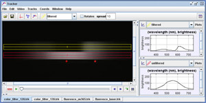

This shows both the filtered and unfiltered spectra of light from a 60W "soft white" incandescent lamp with HeNe red (633nm) and green (543 nm) laser spots for calibration. Can you identify the color of the filter from just its spectrum?
